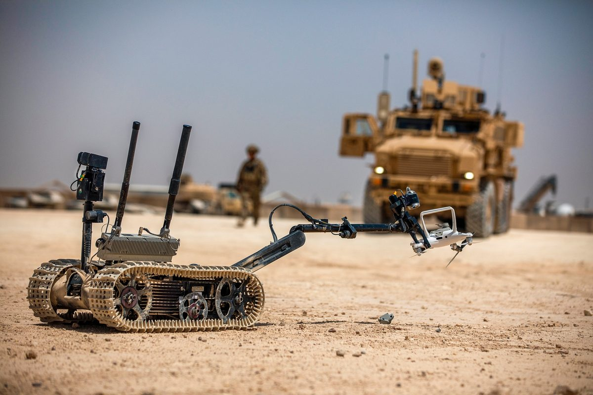
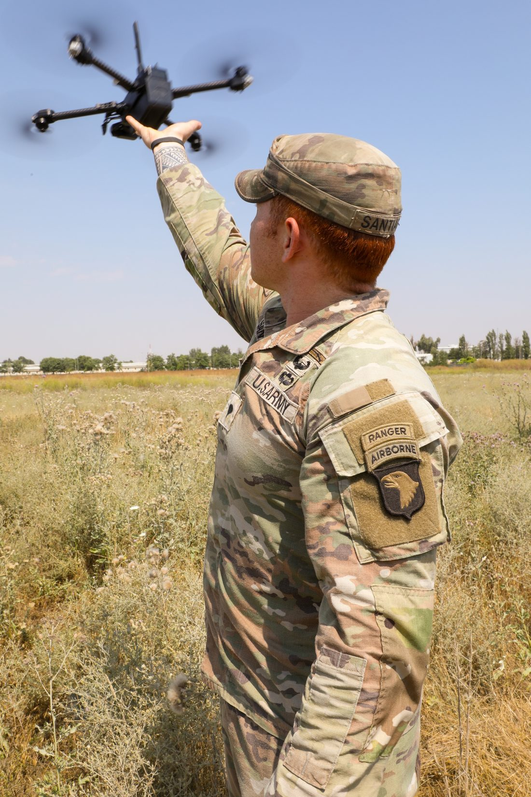

Recovered, not wrecked
The drone you recover is the briefing the enemy never meant to give you.
Recovered airframes, staged for exploitation. Every one is a lead.
The platform — “Peregrine” interceptor
A heavy-lift airframe with margin to spare.
A coaxial X8 octocopter built to carry a launcher, a catch, and a full sensor suite — and still hold a 2.3:1 thrust margin for the dash and the snatch.
Recovered UAS · U.S. DoD · DVIDS · public domain
Exploitation — ForensIQ-1
Every capture
is a confession.
A recovered drone is a sealed record. ForensIQ-1 is a write-blocked, read-only exploitation appliance that turns recovered storage into a signed chain-of-custody report — and, where the data allows, pins the geolocated launch point of the hostile aircraft.

- Capture point
- 48.5612 N · 38.0411 E
- Estimated origin
- 48.41 N · 37.93 E
- Error bound
- ±240 m
- Source
- recovered flight log
- Integrity
- SHA-256 verified · write-blocked
- Output
- signed PDF · custody sealed
ForensIQ-1 produces intelligence for the commander. It is an analysis tool — never an instruction to act.
Platform — “Geulmae” interceptor
A heavy-lift airframe
with margin to spare.
A coaxial X8 octocopter built to carry a launcher, a catch and a full sensor suite — and still hold a 2.3:1 thrust margin for the dash and the snatch.

- Max takeoff weight
- 14 kg
- Mission payload
- ~5 kg
- Dash speed
- 120 km/h
- Endurance (capture)
- ~25 min
- Operating radius
- 8 km
- Hold precision
- ±0.1 m (RTK)
- Thrust margin
- 2.3 : 1
- Navigation integrity
- OSNMA · RAIM
- Command authenticity
- MAVLink 2 signed
- Engagement
- physical capture · human-authorized
TaloNet captures by physical means and defends its own systems — it does not jam, spoof or take over other aircraft.
Get in touch
Request a briefing.
Walk through the system with our team — capabilities, integration, and evaluation options for your airspace. Tell us about your requirement and we will follow up.